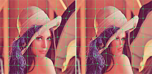

Benjamin W. Herila

Computer Graphics
One of my primary focuses in Computer Science involves Computer Graphics.
Ray Tracing
The hallmark project of CS123 is a standard recursive ray tracer which supports several types of primitives, texture mapping, shadows, point/area/directional lighting, and specular highlights. I implemented a basic raytracer and several enhancements, including support for arbitrary meshes, anti-aliasing, multi-threading, texture scaling and filtering. In addition, I implemented a kd-tree to accelerate the intersection tests.
Path Tracing (Polaris)
In a joint project with my roommate, Paul Sastrasinh, we extended the CS123 ray tracer to perform uni and bi-directional path tracing. This was an interesting experiment and it enabled us to render all kinds of interesting scenes.
Photon Mapping
As a student in CS224, we built upon Milton to implement photon mapping. Milton was implemented by Matt Jacobs and Travis Fischer, two other students from Brown CS, and it contains a scenegraph, ray tracer, and an implementation of Metropolis Light Transport (MLT).
High Performance Computing
We extended Polaris to work on a distributed computing cluster. Polaris compiles and runs on both Brown''s Oscar HPC cluster (over 200 nodes) and the NICS Kraken cluster (over 9000 nodes) which is one of the most powerful supercomputers in the world. Polaris could be used to render extremely detailed scenes and high-resolution images by rendering a single frame in parallel. It can also be used to render video clips by rendering multiple frames in parallel.
Mesh-based Image Deformation
Mesh based image deformations (Bilinear, triangulation using barycentric coordinates, and perspective). Support for warping from an arbitrary quadrilateral or triangular mesh to another, arbitrary quadrilateral or triangular mesh. (Java)

Downloads
Because the ray tracing and photon mapping projects are still assignments at Brown, the source code is not available for download from this web site. Source code may be made available to qualified academic institutions by e-mailing [email protected]
Compiled statically-linked binaries may be downloaded below:
- Ray, compiled for Windows x86, with sample scenes
- Photon Mapping, compiled for Windows x86, with sample scenes
- Path Tracing, compiled for Windows x86
- HPC sample render (JPG)